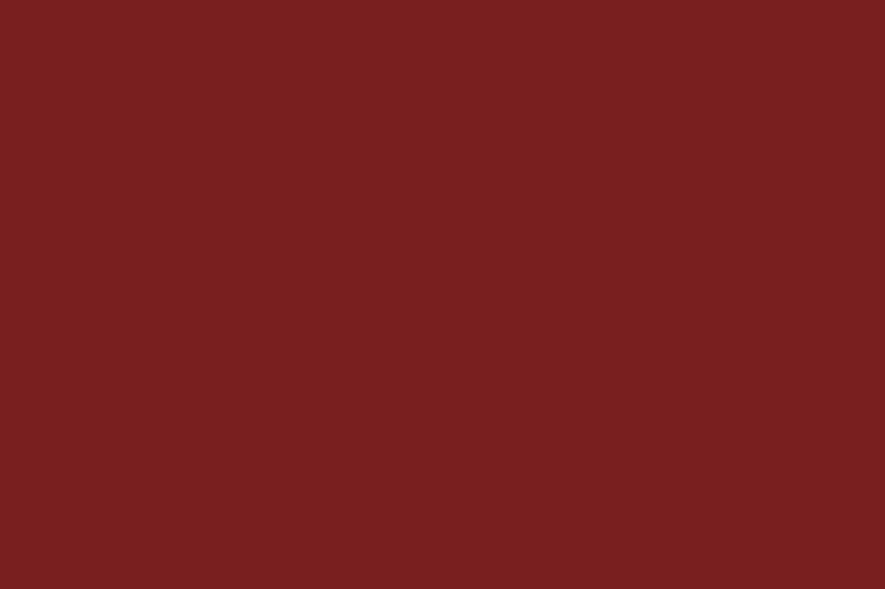

Liuzhou Luosifen
柳州 · 螺蛳粉
Last updated: August 2026

There aren't many cities where the thing worth traveling for is a smell. Liuzhou, a heavy-industry city in Guangxi Zhuang Autonomous Region known for cars and steel, became famous for something else entirely: luosifen, a rice-noodle dish built around pickled bamboo shoots and chili oil, with a strong fermented aroma and a vast following. It went from a street-stall staple to a packaged-goods phenomenon, and the city leaned into it — to the point that "going to Liuzhou for a bowl of noodles" is now a completely normal thing to do.
The Dish, Explained Without the Shock Factor
Luosifen gets talked about in terms of being "stinky," which sells it short and scares people off. Here's a calmer, truer version: it's river snail rice noodles — rice noodles in a broth, topped with pickled bamboo shoots, chili oil, peanuts, fried tofu, greens, and a few other things, with the snails used mainly to build the broth flavor rather than sitting in the bowl. The aroma from the pickled bamboo is strong and fermented, but it's one note in a dish that's mostly about the sour-spicy-savory balance joining the chewy noodles and crunchy toppings.
The useful mental picture: a bowl of glossy rice noodles in a reddish, flavor-loaded broth, with a tangle of toppings, and a fermented kick that's the signature — not a gag, just a strong regional taste. Once you get past the intro, it's a genuinely satisfying, skillfully layered street food.
First-Person Notes From Eating It in Liuzhou
I ate luosifen the way the city does, at a proper local shop rather than a tourist version. The bowl came out steaming, the broth dark and chili-flecked, the fermented bamboo giving it that immediate, divisive aroma. First spoonfuls are all broth and heat; then you get to the noodles and the toppings, and the sour from the bamboo balances the chili so it builds rather than just burns.
The best part of eating it in Liuzhou is how unpretentious the whole thing is. It's everywhere — corner shops, food streets, a bowl for a few yuan more or less — and people just sit down and eat it at any hour. A couple of the small shops I passed were packed at a mid-afternoon hour, everyone on the same bowl, no ceremony. That's the real Liuzhou food culture: a working city that genuinely loves its noodles.
- Pick a local shop over a chain: the guides and round-ups all differ, but a busy neighborhood shop is rarely a miss.
- Levels of heat and spice: shops adjust the chili to you; if you're not used to the burn, ask for less and it's still the same dish.
- Order the add-ons: fried tofu, an extra egg or meat, more bamboo — the toppings are half the point.
How a Noodle Made a City's Reputation
The reason luosifen became a phenomenon is a real story, not hype. It started as Liuzhou street food — this industrial city's working class ate it out of corner stalls. In the 2020s, the packaged version took off, and what had been local became a national and then an export product, with the city building an actual industry around it: standardized packaged luosifen, factory output, and a deliberate "bowl of noodles" identity used in the city's own promotion. It's an unusual case of a heavy-industry place rebranding around food and it working.
That transformation is why the dish deserves more than a "smelly noodle" take. It's a genuine regional food with a deep local base that happened to scale — and the city leans into it proudly. Eating it in Liuzhou means eating the source version of something that became a national phenomenon from exactly this kind of shop.
How to Do the Luosifen Trip
- Base it on the food: Liuzhou isn't a big tourist town, so the trip is really about eating — give it a day or two and work through the top shops.
- Eat like a local: morning bowls, late-night food streets, small shops with queues — follow where locals eat rather than a single famous spot.
- Pair with the city: Liuzhou's a river city; a walk along the waterfront and a couple of food stops is a full, satisfying visit without chasing attractions.
A Few Practical Things
- Getting there: Liuzhou is well connected by high-speed rail and sits a short ride from Guilin and Nanning, so it works as a side trip.
- The bowl itself: cheap and fast, so you can try several shops in a day; most do takeout too, and the packaged version is a fair souvenir of the same flavor.
- When to go: it's a year-round food city; go when you're in the Guangxi loop and want something other than scenery.
- Address note: written as part of Guangxi Zhuang Autonomous Region, per the Guangxi series.
Bottom Line
Liuzhou is a heavy-industry city that found its global identity not in cars or steel but in a bowl of rice noodles — luosifen, the fermented-bamboo-and-chili dish that started in its street stalls and became a national and export phenomenon. The "smelly noodle" label undersells what's actually a layered, satisfying regional food, and the strongest version is eating it in Liuzhou where it's just an everyday bowl for a working city. Come for the noodles, leave with a proper understanding of the one dish that put a factory town on the food map.
Produced by Deep in China — Go deeper than any tourist ever goes.